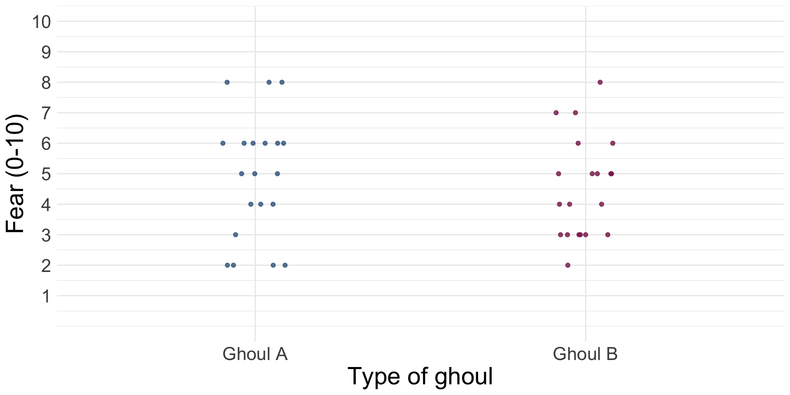
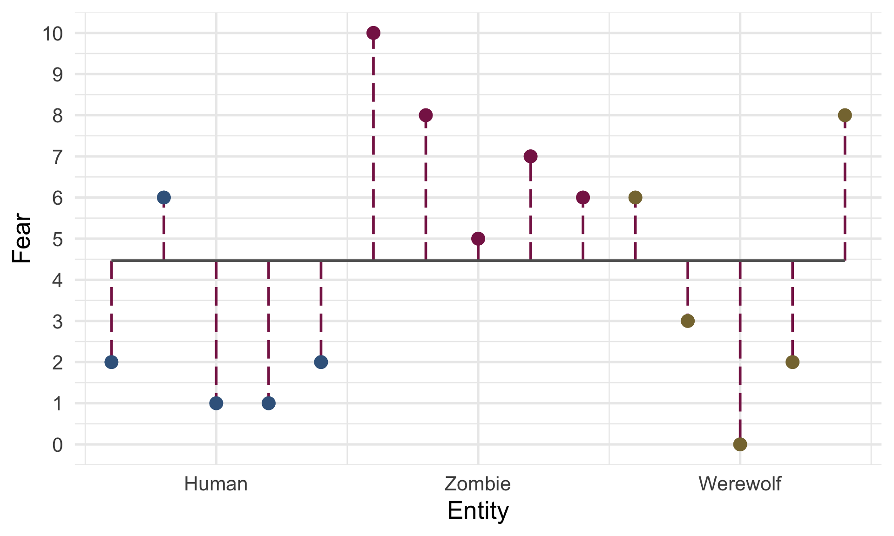

Categorical predictors
Comparing means with the GLM
University of Sussex


|


Load and Look

| Human | Zombie | Werewolf | |
|---|---|---|---|
| 2 | 10 | 6 | |
| 6 | 8 | 3 | |
| 1 | 5 | 0 | |
| 1 | 7 | 2 | |
| 2 | 6 | 8 | |
| Mean | 2.40 | 7.20 | 3.80 |
| Variance (s2) | 4.30 | 3.70 | 10.20 |
| Standard deviation (s) | 2.07 | 1.92 | 3.19 |
\(\text{Overall mean (} \bar{X}_\text{grand}\text{)} = 4.47\)
Visualize the model


Visualize the model

The model

How to Evaluate

Overall fit (F-statistic)
- The ratio of how well the model fits to how much error it has
- In the case of experiments: _ The model = differences between means
- F is the ratio of the experimental effect to the background ‘error’
- Tests whether group means differ overall
Overall fit (R2)
- How much variance in the outcome is explained by group membership?
Assumptions
- Interpreted the same as other models
- Residual plots will show vertical lines of dots (review the Beast of Bias lecture)
Total sum of squared error, SST

Model sum of squared error, SSM

Interpret parameter estimates, CIs and tests

- Break down the overall fit
- Tell us, specifically, which means differ